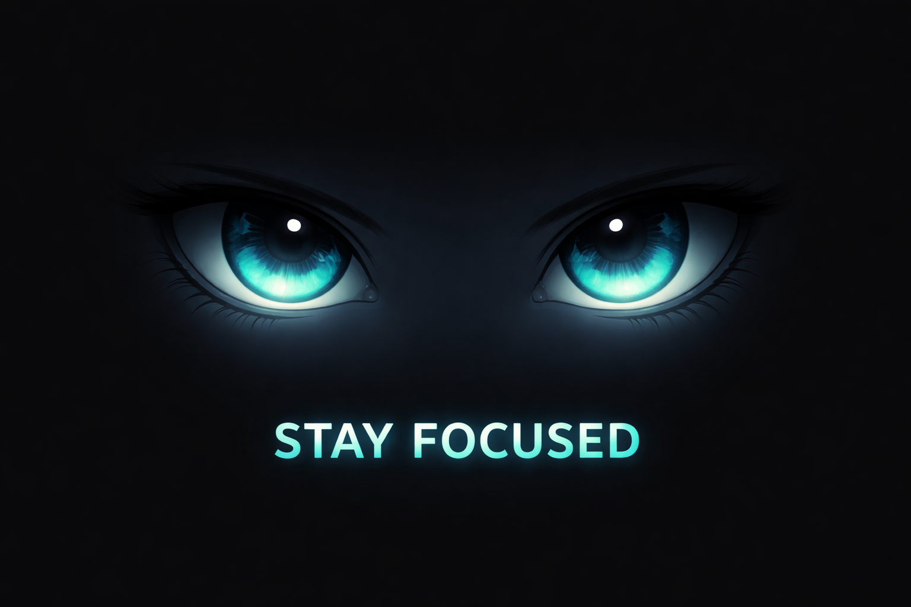

Source
Device microphone
Drag&Drop file
Chopin Mazurka in F minor, op. 68 no. 4 (by Pianotomy)
Pirates of the Caribbean
50 Animate Piano
20 Eternal Songs
Chromatic scale on a piano, ascending
Sine wave, 440 Hz
Sawtooth wave, 110 Hz
Square wave, 110 Hz
Pink noise
Play
Restart
Show Configuration

Practice Timer:
60:00
Restart Timer
Drop audio file here or select the Source from the menu and press Play.
Chrome browser is recommended for the best experience :)
(Safari kind of works but the performance is terrible!)